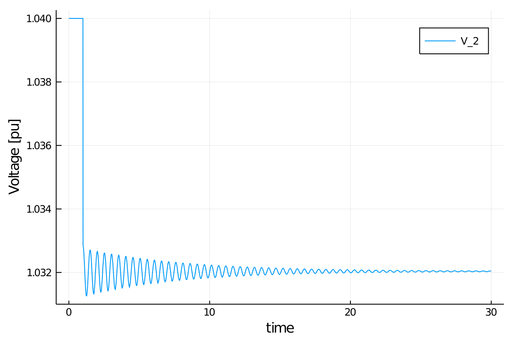

Tutorial: One Machine against Infinite Bus (OMIB)
This tutorial will introduce you to the functionality of LITS for running Power System Simulations. Note that this tutorial is for LITS 0.3.0. Future versions will have dedicated functions to find an equilibrium point using a Power Flow method without relying in a guess of the initial condition to run a non-linear solver.
This tutorial presents a simulation of a two-bus system, with an infinite bus (represented as a voltage source behind an impedance) at bus 1 and a classic machine on bus 2. The perturbation will be the trip of one of the two circuits (doubling its resistance and impedance) of the line that connects both buses.
This tutorial can be found on LITS/Examples repository.
Step 1: Package Initialization
The first step consists in initialize all packages that will be used to run the simulation. All the necessary packages are listed:
using LITS
using PowerSystems
using Sundials
const PSY = PowerSystemsPowerSystems is used to properly define the data structure, while Sundials is used to fsolve the problem defined in LITS. Finally we call use can call PowerSystems functions using the PSY abbreviation.
Step 2: Data creation
Next we need to define the different elements required to run a simulation. To run a simulation, it is required to define a PSY.System that requires the following components:
- Vector of
PSY.Buselements, that define all the buses in the network. - Vector of
PSY.Branchelements, that define all the branches elements (that connect two buses) in the network. - Vector of
PSY.DynamicInjectionelements, that define all the devices connected to buses that can inject (or withdraw) current, while also defining differential equations to model its dynamics. These include generators and inverters. - Vector of
PSY.PowerLoadelements, that define all the loads connected to buses that can withdraw current, without defining any differential equation. Note thatLITSwill convert ConstantPower loads to RLC loads for transient simulations. - Vector of
PSY.Sourceelements, that define source components behind a reactance that can inject or withdraw current, without defining any differential equation. - The base of power used to define per unit values, in MVA as a
Float64value. - The base frequency used in the system, in Hz as a
Float64value. - (Optional) Selecting which of the
PSY.Lines(of thePSY.Branchvector) elements must be modeled ofDynamicLineselements, that can be used to model lines with differential equations.
To start we will define the data structures for the network.
Buses and Branches
As mentioned earlier, we require to create a Vector of PSY.Bus to define the buses in the network. Currently, some of the parameters are not used in LITS, but will be used once the initialization procedure is implemented (such as voltage limits or the requested bus voltage).
#Define the vector of buses
nodes_OMIB = [
PSY.Bus(
1, #number
"Bus 1", #Name
"REF", #BusType (REF, PV, PQ)
0, #Angle in radians
1.05, #Voltage in pu
(min = 0.94, max = 1.06), #Voltage limits in pu
69, #Base voltage in kV
),
PSY.Bus(2, "Bus 2", "PV", 0, 1.0, (min = 0.94, max = 1.06), 69),
]Note that two buses are defined in the vector nodes_case1. It is important that the bus numbers are ordered from $1$ to $n$, since that structure will be used to construct the vector of variables. Future versions of LITS will allow to relax this assumption. Similarly, to define the branches (that also has some parameters that are currently not used, such as the rate and angle limits):
#Define the vector of branches
branch_OMIB = [PSY.Line(
"Line1", #name
true, #available
0.0, #active power flow initial condition (from-to)
0.0, #reactive power flow initial condition (from-to)
Arc(from = nodes_OMIB[1], to = nodes_OMIB[2]), #Connection between buses
0.01, #resistance in pu
0.05, #reactance in pu
(from = 0.0, to = 0.0), #susceptance in pu
18.046, #rate in MW
1.04, #angle limits (-min and max)
)]Since we are interested in creating a fault that trips one of the two circuits of the line, we will create an additional Vector of branches with doubled impedance:
#Define the vector of branches under the fault
branch_OMIB_fault = [PSY.Line(
"Line1", #name
true, #available
0.0, #active power flow initial condition (from-to)
0.0, #reactive power flow initial condition (from-to)
Arc(from = nodes_OMIB[1], to = nodes_OMIB[2]), #Connection between buses
0.02, #resistance in pu
0.1, #reactance in pu
(from = 0.0, to = 0.0), #susceptance in pu
18.046, #rate in MW
1.04, #angle limits (-min and max)
)]Note that the resistance and reactance is doubled in comparison to the system without fault.
Injection devices
Secondly, we will define devices that can inject/withdraw electric current directly without defining differential equations. In this case we include a load and the voltage source that model the infinite bus.
loads_OMIB = [PSY.PowerLoad(
"LBus1", #name
true, #availability
nodes_OMIB[2], #bus
PSY.LoadModels.ConstantPower, #type
0.3, #P
0.01, #Q
0.3, #P_max
0.01, #Q_max
)]
inf_gen_OMIB = [PSY.Source(
"InfBus", #name
true, #availability
nodes_OMIB[1], #bus
1.05, #VR
0.0, #VI
0.000005, #Xth
)]Note that loads are assumed as constant power for power flow purposes, but for dynamic simulations are converted to impedance loads assuming nominal voltage equals to 1 pu.
Dynamic Injection devices
Third, we define the Vector of PSY.DynamicInjection elements. In this case, we require to define a generator located in bus 2. For that purpose, we need to define its machine, shaft, automatic voltage regulator (AVR), turbine governor (TG) and power system stabilizer (PSS):
### Machine ###
machine_OMIB = PSY.BaseMachine(
0.0, #R
0.2995, #Xd_p
0.7087, #eq_p
100.0,
) #MVABase
######## Shaft Data #########
### Shaft for Case 1 ###
shaft_OMIB = PSY.SingleMass(
3.148, #H
2.0, #D
)
######## AVR Data #########
avr_OMIB = AVRFixed(0.0) #Vf not applicable in Classic Machines
######## TG Data #########
### No TG ###
tg_OMIB = TGFixed(1.0) #No TG: Efficiency = 1.0
######## PSS Data #########
### No PSS ###
pss_OMIB = PSSFixed(0.0) #No PSS without AVR
### Constructing the Generator ###
gen_OMIB = PSY.DynamicGenerator(
1, #Number
"OMIB_Gen", #name
nodes_OMIB[2], #bus
1.0, #ω_ref
1.0, #V_ref
0.5, #P_ref
0.0, #Q_ref: Not used for standard machines (only for PQ gens)
machine_OMIB, #machine
shaft_OMIB, #shaft
avr_OMIB, #avr
tg_OMIB, #tg
pss_OMIB, #pss
)Note that a generator is defined by its 5 components, while also defining its reference for frequency, voltage and power. The reactive power reference must be defined but is not used for standard machines, since is only used for PQ generators, that will be implemented in future versions of LITS.
Defining the Dynamic System
Finally, with all the components properly constructed we define the dynamic system:
#Create the system
sys = PSY.System(
100.0, #Base MVA
frequency = 60.0, #Nominal frequency in Hz
)
#Add the buses to the system
for bus in nodes_OMIB
PSY.add_component!(sys, bus)
end
#Add the branches to the system
for br in branch_OMIB
PSY.add_component!(sys, br)
end
#Add the loads to the system
for load in loads_OMIB
PSY.add_component!(sys, load)
end
#Add the sources (infinite gens) to the system
for source in inf_gen_OMIB
PSY.add_component!(sys, source)
end
#Add the generator
PSY.add_component!(sys, gen_OMIB)Step 3: Build the simulation and initializing the problem
The next step is to create the simulation structure. This will create the indexing of our system that will be used to formulate the differential-algebraic system of equations. To do so, it is required to specify the perturbation that will occur in the system. LITS support two types of perturbations:
- Three Phase Fault
- Change in Reference Parameter
In here, he will use a Three Phase Fault, that is modeled by modifying the admittance matrix of the system. To do so we create a ThreePhaseFault perturbation as follows:
#Obtain the Ybus of the faulted system
Ybus_fault = PSY.Ybus(
branch_OMIB_fault, #fault set of lines
nodes_OMIB, #set of buses
)[:,:]
#Construct the perturbation
perturbation_Ybus = ThreePhaseFault(
1.0, #change will occur at t = 1.0s
Ybus_fault, #new Ybus
)With this, we are ready to create our simulation structure. We will skip solving for initial conditions to discuss about indexing. To construct our simulation we use:
#Time span of our simulation
tspan = (0.0, 30.0)
#Define Simulation
sim = Simulation(
sys, #system
tspan, #time span
perturbation_Ybus, #Type of perturbation
initialize_simulation = false #keyword argument to not find initial conditions.
)This will create the simulation structure that will be used to run the transient simulation and will modify the system to include the indexing. LITS will have the following structure for the vector of variables:
on which $v_r$ is the vector of real voltages of all buses, $v_i$ is the vector of imaginary voltages of all buses and $z$ is the rest of states defined by the dynamic devices. Then, the length of the vector of variables will $2n + \text{len}(z)$, where $n$ is the number of buses in the system. The indexing of the states can be found using:
ext = PSY.get_ext(sim.system) #Obtain ext information of the system
ext["global_index"] #Showcase the global indexing of zIn this system, $\delta$ of the generator is state 5 and $\omega$ is state 6 (since the first 4 states are the bus voltages). In addition, ext["lits_counts"] has information on the total variables and total states (differential variables).
The next step consists in finding an initial condition for the states. In this case simply running
#Define Simulation
sim = Simulation(
sys, #system
tspan, #time span
perturbation_Ybus, #Type of perturbation
)will correctly initialize the system. If no initial guess is provided, the system will use a flat start guess, assuming that all real voltages are equal to one, while imaginary voltages are equal to zero. Differential variables (states) will be guessed as zero too. The initial values can be obtained using sim.x0_init. However, for most systems if a bad initial guess is used, the non-linear solver may fail in correctly initializing the system. For such purposes, an initial guess can be provided to the simulation as follows:
#Initial guess
x0_guess = [
1.0, #VR_1
1.0, #VR_2
0.0, #VI_1
0.0, #VI_2
0.2, #δ
1.0, #ω
]
#Define Simulation
sim = Simulation(
sys, #system
tspan, #time span
perturbation_Ybus, #Type of perturbation
initial_guess = x0_guess, #initial guess
)
#Check the initial condition
sim.x0_initStep 4: Run the Simulation
Finally, to run the simulation we simply use:
#Solve problem
run_simulation!(sim, #simulation structure
IDA(), #Sundials DAE Solver
dtmax=0.02); #Arguments: Maximum timestep allowedIn some cases, the dynamic time step used for the simulation may fail. In such case, the keyword argument dtmax can be used to limit the maximum time step allowed for the simulation.
Step 5: Exploring the solution
After running the simulation, our simulation structure sim will have the solution. For that sim.solution can be used to explore the solution structure. In this case sim.solution.t returns the vector of time, while sim.solution.u return the array of states. In addition, LITS have two functions to obtain different states of the solution:
get_state_series(sim, ("OMIB_Gen", :δ)): can be used to obtain the solution as a tuple of time and the required state. In this case, we are obtaining the rotor angle:δof the generator named"OMIB_Gen".get_voltagemag_series(sim, 2): can be used to obtain the voltage magnitude as a tuple of time and voltage. In this case, we are obtaining the voltage magnitude at bus 2 (where the generator is located).
using Plots
angle = get_state_series(sim, ("OMIB_Gen", :δ))
plot(angle, xlabel="time", ylabel="rotor angle [rad]", label="rotor angle")
volt = get_voltagemag_series(sim, 2)
plot(volt, xlabel="time", ylabel="Voltage [pu]", label="V_2")⠀
⠀
Optional: Small Signal Analysis
LITS 0.3.0 uses automatic differentiation to compute the reduced Jacobian of the system for the differential states. This can be used to analyze the local stability of the linearized system.
small_sig = small_signal_analysis(sim)The small_sig result can report the reduced jacobian for $\delta$ and $\omega$, and can also be used to report the eigenvalues of the reduced linearized system.
small_sig.reduced_jacobian
small_sig.eigenvalues